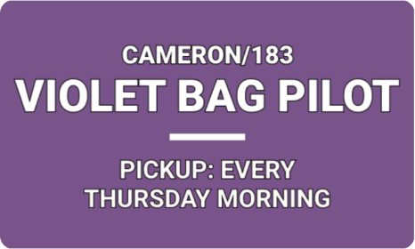
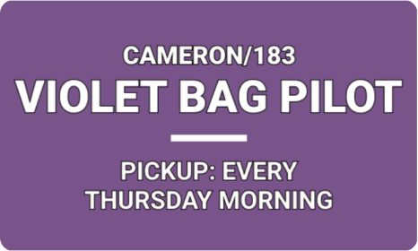

Encampment Violet Bag Pilot
A new service for Austin's homeless
Case Study
Summary
The Office of Design and Delivery (ODD) partnered with government departments, service providers, and individuals experiencing homelessness to launch the Encampment Violet Bag Collection pilot, modeled on Seattle’s Purple Bags Program, a successful component of Seattle’s homeless outreach strategy. After testing the pilot and collecting data at four "hot spots” over a 6-week period, we developed recommendations to expand the scale of the pilot to a citywide program. Currently, the Violet Bag Program is city service that includes violet bag distribution, social services outreach, and weekly garbage collection at encampments.
My role: user research, service design, visual design
Deliverables: research synthesis, sign and information card mockups
Tools: Figma
Challenge
Because each encampment involves a different set of needs and challenges, we needed a solution that was flexible and scalable. It must be adaptable to on-the-ground environments and relatonships.
Solution
In collaboration with Austin Resource Recovery, Parks and Recreation, Watershed Protection Department, and Public Works, we developed the Encampment Violet Bag Prorgram, which currently serves encampments around Austin.
Check out media coverage of our pilot!: KVUE ABC, CBS Austin
Process
User Research
Pre-interviews: My co-researcher and I conducted pilot pre-interviews with encampment residents to gauge their interest in participating in the pilot.
Pilot interviews: Over six weeks, we visited the various encampment sites to talk to residents about the progress of the pilot, how violet bag drop-off/pick-ups were going, and how we could improve the pilot. In addition, we interviewed Austin Resource Recovery crew members who were responsible for the pick-ups to understand their pain points and get their feedback.
Research Findings and Presentation
We found that encampment residents are very enthusiastic about keeping their spaces clean and will use resources given to them. In addition, the violet color identification and branding was crucial to citywide pilot awareness and garnering media and public attention.
After concluding the pilot, I consolidated our learnings and feedback from individuals experiencing homelessness, the public, and city staff, and presented findings to project stakeholders, including representatives from the City Manager’s Office, Parks and Recreation, Watershed Protection, Austin Resource Recovery, Public Works, Integral Care, and 311.
Visual Design
Branding
To effectively communicate the designated violet bag drop-off location and pick-up days, as well as disposal practices, to encampment residents, I designed an accessible, easy-to-understand, and action-oriented sign. The sign was placed on a standing kiosk and was visible to both encampment residents and the public.
 

In addition, I designed info cards (front: pilot logistics, back: disposal practices) to hand out to encampment residents when conducting outreach and user interviews. Encampment residents would then have important information on-hand, rather than having to walk to the sign to read the pilot guidelines.
I used a distinctive violet color to indicate the violet bag connection and to create a public-facing brand for the pilot, which left a lasting impression on encampment communities, Austin residents, and City staff.
Conclusion
This project was a significant human-centered design learning process. Without extensive user interviews, meeting people where they are and giving people experiencing homelessness an opportunity to voice their concerns and make decisions, the Violet Bag Pilot would not have achieved this level of succcess. This experiencing showed me that people are already being innovative and solving problems with their neighbors, and the City can help by providing them with the right tools.